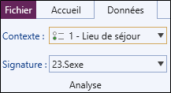

PRISE EN MAIN
Le logiciel propose 3 protocoles à l'utilisateur, accessibles depuis le panneau d'accueil : le protocole d'Exploration, le protocole de Codification, et le protocole de Synthèse.
Ci-dessous, un premier aperçu de la partie Analyse textuelle qui vous permettra de vous familiariser avec les différents environnements de travail que propose ce nouveau module.
À la première utilisation des fonctions textuelles et sémantiques une boîte de dialogue permet de choisir le texte à analyser ainsi qu’une variable de contexte susceptible d’avoir une influence sur les contenus et une ou plusieurs signatures permettant de situer les verbatim.

Pour analyser une nouvelle variable texte, procédez comme suit :
-
Cliquez sur le bouton Changer depuis l’onglet Accueil.
Pour modifier les variables de contexte ou de signatures :
-
Utilisez le menu déroulant prévu à cet effet depuis l'onglet Données.

L’environnement d’Exploration comporte un volet latéral, situé à gauche de l'écran, intitulé Lexique. Il affiche la liste des mots ou des concepts du texte. Les boutons Mots et Concepts (dans le bandeau, onglet Accueil) permettent de passer d’une liste à l’autre. Les mots apparaissent par défaut dans leur forme lemmatisée, et leur catégorie grammaticale est indiquée (Cat).

-
La liste des éléments du lexique (mots ou concepts) peut être réaménagée en regroupant des éléments (on marque les éléments à grouper dans la liste puis clic droit > Grouper).
-
Le bouton symbolisant le filtre (en haut du volet Lexique) permet de choisir la nature et le nombre des éléments affichés.
-
Le bouton Option, règle le calcul des éléments apparaissant dans le lexique : mots lemmatisés ou non, niveau sémantique dans le thésaurus et niveau d’exigence.
Fouille de texte
Le corpus est affiché, par défaut, dans son intégralité. Les observations peuvent être présentées dans leur ordre d’arrivée selon leur longueur ou selon les autres éléments de contexte affiché en regard du texte (les autres colonnes, que l'on peut ajouter / supprimer via l’onglet Corpus, groupe Colonnes). En cliquant sur les en-têtes de colonnes on change on trie les observations par rapport au contenu de cette colonne.
En cliquant sur un élément du lexique, on marque dans le corpus le mot ou l’observation correspondant. Le bouton Voir les observations de l’onglet corpus permet de restreindre ou non l’affichage du corpus aux éléments marqués dans le lexique. Le contenu des observations peut être découpé en phrases ou paragraphes. On peut ainsi très facilement rechercher du verbatim et copier les éléments sélectionnés (bouton Copier ou Ctrl + C).
Les passages contenant des opinions positives ou négatives peuvent être identifiés dans le corpus par un coloriage vert ou rouge selon le cas (onglet Corpus, Colorier les opinions).
Le protocole de Synthèse permet de visualiser les résultats des analyses textuelles et sémantiques, et de préparer leur restitution. Cinq types de synthèses peuvent être affichés : Nuage de mots, Synthèse globale, Orientation et Sentiments, Analyse par contexte, Analyse de contenu.
On choisit le type de synthèse dans l’onglet synthèse. La navigation entre les différentes vues et les différentes synthèses s'effectue grâce aux les flèches situées en bas à gauche de l'écran.
Le bouton Exporter (dans l'onglet Accueil) permet de récupérer les synthèses dans un format PDF ou Word.

L’environnement d’analyse de contenu permet de lire les réponses pour les coder selon une grille construite par le chercheur, le codebook. Sphinx iQ3 offre également la possibilité de créer un codebook de manière automatique selon un niveau de détail choisi par l'utilisateur (thèmes généraux, idées principales ou concepts détaillés).

Codebook automatique
Dans le cas du codebook automatique, le système construit le codebook en fonctions des éléments du thésaurus les plus fréquents et il code automatiquement chaque observation en fonction des concepts qui s’y trouvent. On obtient directement le résultat sous forme d’une synthèse (dans l'environnement de synthèse) présentant la statistique des thèmes et sous thèmes du thésaurus présent dans le corpus. Cette codification peut être contrôlée en passant en revue toutes les observations (dans l'environnement de codification).

Construction manuelle d'un codebook et codification
L’utilisateur peut aussi construire son propre codebook en fonction de ce qu’il cherche à repérer dans le corpus. Il peut ainsi définir une ou plusieurs listes d’idées qui constitueront sa grille d’analyse.
EXEMPLE :
Il peut créer une première variable pour l’Hôtel : Aspect extérieur, Accès…, une autre pour la Chambre : Espace, propreté… et ainsi de suite en utilisant le bouton Nouvel élément.
Il peut également prévoir de recopier des extraits ou d’ajouter ses propres commentaires (fonction Associer des extraits).

Lorsque le codebook est construit la codification proprement dite peut débuter : les flèches situées au-dessus du codebook permettent de parcourir le corpus et de coder les observations.
Ce travail peut être assisté de plusieurs manières.
-
En faisant défiler les observations de telle sorte que le codeur voit des observations qui diffèrent le plus les unes des autres (on procède pour cela à une classification préalable - il s'agit de la fonction Mode assisté). Lorsqu’il en aura codé suffisamment (une centaine au moins) il pourra essayer l’Extension de codification. Le système compare chaque observation restant à coder à celle qui l’on déjà été. Il code automatiquement celles qu’il reconnaît. Le bouton Diagnostic et conseil (onglet Analyse de contenu) précise les conditions d’un usage efficace de cette extension de codification,
-
En utilisant le volet Lexique pour ne faire défiler que les observations contenant un mot ou un concept sélectionné. Pour cela, il faut faire apparaître la liste des mots ou concepts en cliquant sur le bouton Afficher (groupe Volet latéral) de l’onglet Accueil. Il suffit ensuite de sélectionner un mot ou un concept de la liste pour faire défiler toutes les observations qui le contiennent.
La détermination des éléments sémantiques, des classifications, des calculs de spécificités, des règles de sélection des verbatim, d’affichage des nuages de mots dépendent d’un ensemble de paramètres modifiables par l’utilisateur. Les paramètres par défaut garantissent un bon fonctionnement du logiciel, mais selon le type de corpus et les problématiques d’analyses ils peuvent être modifiés à partir des boîtes de dialogue suivantes.
-
Les options de calcul sont accessibles en cliquant sur le bouton Options du bandeau (onglet Accueil).
|
Règles de calcul du lexique |
Règles de calcul des classifications |
Règles des calculs de mots spécifiques |
|---|---|---|


|
Règles de sélection des verbatim |
Règles d'affichage des synthèses |
Règles pour l'extension de codification |
|---|---|---|


Les variables suivantes sont automatiquement créées comme conséquence des analyses effectuées.
-
Une variable fermée dont les modalités sont les classes de la classification hiérarchique descendante.
-
Deux variables fermées provenant de l’analyse des sentiments. L’une contient l’orientation globale de l’observation (Positif, Négatif) l’autre la nature des sentiments exprimés dans l’observation (Jugement, Evaluation,...).
-
Un groupe de variables fermées créées au lancement de l’analyse de contenu automatique. Elles correspondent aux Idées et Concepts de l’étude tels qu’ils ressortent de l’application du thésaurus.
L’utilisateur peut y ajouter le calcul de variables particulières pour poursuivre ses analyses grâces aux fonctions d’analyse statistique : Tableaux de bord. Plus d'informations sur la création de variables lexicales.